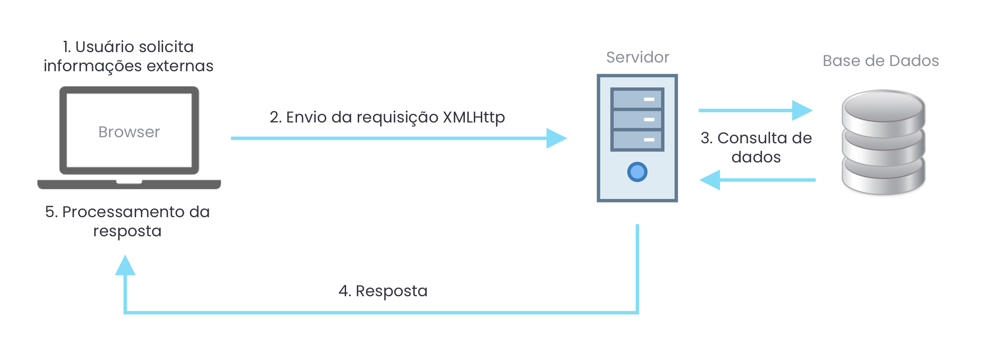

AJAX - Introdução
A sigla AJAX significa Asynchronous JavaScript And XML (JavaScript Assíncrono e XML). O funcionamento do AJAX gira em torno do objeto XMLHttpRequest, que através de requisições HTTP, envia ou recebe dados do servidor ou de serviços externos.
E o melhor de tudo, isto acontece no fundo sem que o usuário perceba e sem que a página precise ser recarregada.
A figura abaixo mostra, de maneira simplificada, como o ajax funciona.
Vamos imaginar uma caixa de pesquisa feita em AJAX para exemplificar este funcionamento.
- Um evento ocorre no browser (o usuário digita um termo de pesquisa)
- O browser envia uma requisição XMLHttp ao servidor com o termo da pesquisa
- O servidor recebe o pedido e consulta na base de dados itens que correspondam àquele termo de pesquisa
- O servidor envia a resposta (em JSON, por exemplo)
- A resposta chega no browser e é processada usando Javascript. O conteúdo da página é alterado para mostrar os resultados da pesquisa
Agora que já sabemos como o AJAX funciona, estamos prontos para fazer a nossa primeira requisição.